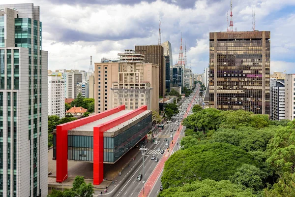
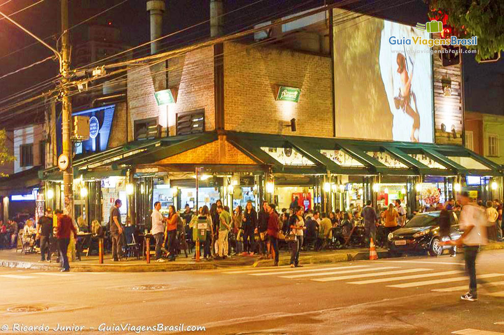

Passear na avenida paulista
Um dos principais centros financeiros da cidade de são paulo, a avenida paulista também possui diversas opções de entreterimento. Endereço do museus de arte de São paulo, do teatro Gazeta e muitos outros, a região é de fácil acesso graças as diversas linhas de ônubis que cruzam a avenida e a linha de metrô que passa por baixo dela.
Os bares da vila madalena
Depois de um dia de trabalho, nada melhor do que um bom chopp, um petisco e uma conversa em uma mesa de bar.Opções de sobra na região das ruas Aspicuelta,Fradique Coutinho e Wisard.
O parque Ibirapuera

Um dos cartões postais da cidade, o parque dispões de mais de 1,5Km² de área verde, lagos artificias e pistas de cooper e ciclismo. E se isso não fosse o suficiente, o parque costuma ser palco de diversos eventos culturais ao longo do ano.